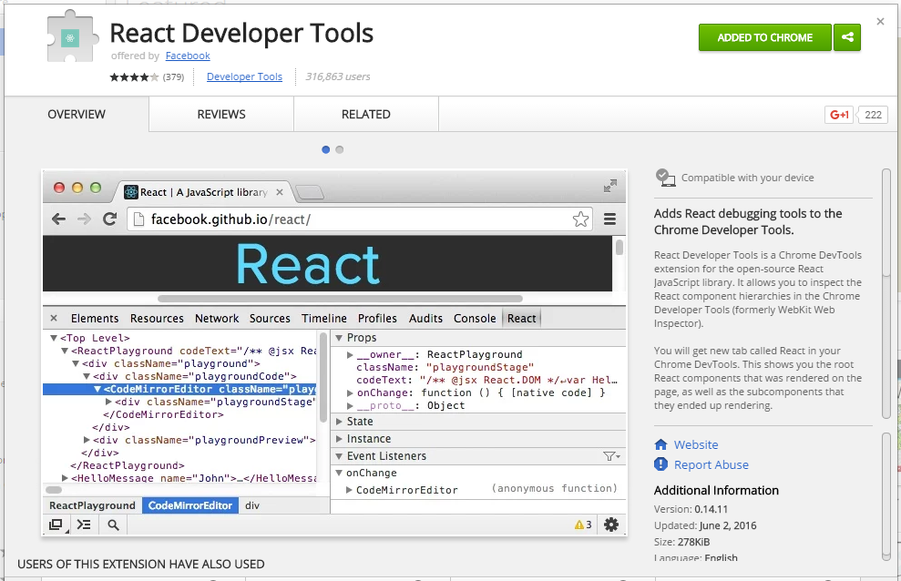

[< Prev](./app-structure.html) | [Home](./) | [Next >](./testing.html)
#React chrome extention for debugging
#####Install the chrome extention for react
[</img>](https://chrome.google.com/webstore/detail/react-developer-tools/fmkadmapgofadopljbjfkapdkoienihi)
#####You may need to restart your browser.
<br />
[< Prev](./app-structure.html) | [Home](./) | [Next >](./testing.html)